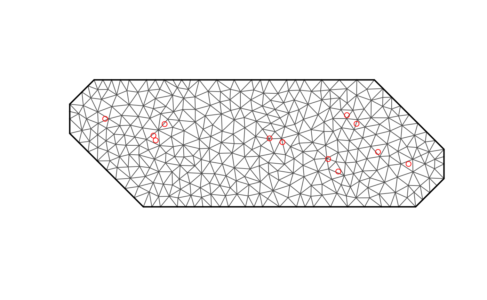
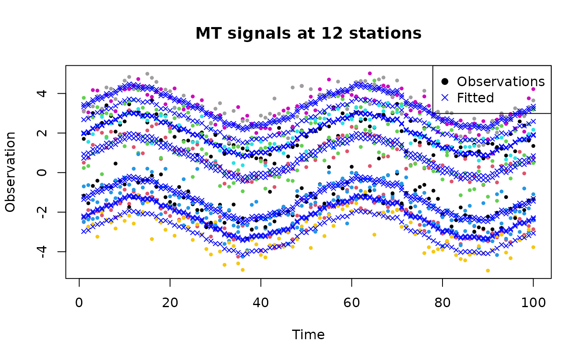

4DModeller for geophysical signals
Source:vignettes/tutorial_geophysics.Rmd
tutorial_geophysics.RmdIntroduction
This is a tutorial to apply R-INLA to modeling geophysical data. The
data represent time-series at some locations distributed over a line or
over an area. There are two possible case studies one is seismic data
with seismic stations located along a line. Each station record 4
components of acoustic signal X-Y-Z particle displacement on geophone
and presure component on hydrophone sensor. The second case is
magnteotelluric data with stations distrubuted over some area. The
signal has 4 channels: 2 magnetic and 2 electric field channels. In the
dataset only 2-3 stations measure at the same. The spatiotemporal
evolution of the field is governed by Maxwell equations. The source of
EM field is disturbance of ionosphere due to solar activity, electrical
structure of the crust and noise component (cultural EM noise, wind,
rain, local conductors). The goal is to describe the source signal
components in space in time.
The spatiotemporal evolution of the field is governed by wave equation.
The small-scale heterogenetities in earth crust produce multiply
scattered wavefield, getting more expressed at a later times and called
coda wave. The goal is to learn about correlations between signals at
diffent stations and from this predict distribution of
heterogeneities.
Pre-processing and Import data
Geophysical data can come in lots of different formats but here will will start with a csv.
# Set the path to the CSV file
data_path <- "data/MT_Svalbard_Z.csv"
# Read the CSV file into a data frame
d <- read.csv(data_path)
# Display the first 30 rows of the data frame
print(head(d, 30))## T Code Lat Lon X Y Zxx DZxx
## 1 64 W01 79.43912 13.37190 344352.8 8829185 0.521560-1.268700i 0.0548630
## 2 128 W01 79.43912 13.37190 344352.8 8829185 0.976730-0.946150i 0.0796320
## 3 256 W01 79.43912 13.37190 344352.8 8829185 1.275000-0.545610i 0.1055400
## 4 64 W02 79.47170 13.40340 345465.2 8832708 0.365810+0.027603i 0.0122050
## 5 128 W02 79.47170 13.40340 345465.2 8832708 0.334400+0.130250i 0.0196360
## 6 256 W02 79.47170 13.40340 345465.2 8832708 0.332980+0.071971i 0.0160230
## 7 64 W03 79.35887 14.09174 357911.5 8818457 0.677670+0.533030i 0.0144900
## 8 128 W03 79.35887 14.09174 357911.5 8818457 0.602800+0.524250i 0.0228960
## 9 256 W03 79.35887 14.09174 357911.5 8818457 0.464750+0.406160i 0.0299950
## 10 64 W04 79.39286 14.00560 356602.2 8822436 -0.445390-1.294600i 0.0127040
## 11 128 W04 79.39286 14.00560 356602.2 8822436 -0.125970-0.991520i 0.0168970
## 12 256 W04 79.39286 14.00560 356602.2 8822436 0.139670-0.520940i 0.0215470
## 13 64 W05 79.37269 13.86486 353455.6 8820550 0.800700+0.635460i 0.0185630
## 14 128 W05 79.37269 13.86486 353455.6 8820550 0.906690+0.787220i 0.0254650
## 15 256 W05 79.37269 13.86486 353455.6 8820550 0.545780+0.611090i 0.0226350
## 16 64 W06 79.33750 13.89353 353563.7 8816578 0.854390+0.744660i 0.0398780
## 17 128 W06 79.33750 13.89353 353563.7 8816578 1.051600+1.123800i 0.0540530
## 18 256 W06 79.33750 13.89353 353563.7 8816578 0.490920+0.838550i 0.0422330
## 19 64 W07 79.42052 13.73600 351485.9 8826175 0.819140+0.805510i 0.0236290
## 20 128 W07 79.42052 13.73600 351485.9 8826175 0.781280+0.686710i 0.0304260
## 21 256 W07 79.42052 13.73600 351485.9 8826175 0.518830+0.592560i 0.0303840
## 22 64 W08 79.43124 13.69948 350892.6 8827457 0.398310-0.140200i 0.0170600
## 23 128 W08 79.43124 13.69948 350892.6 8827457 0.444280-0.099360i 0.0226260
## 24 256 W08 79.43124 13.69948 350892.6 8827457 0.422420+0.159650i 0.0281020
## 25 64 W09 79.49686 13.91783 356219.0 8834178 -0.123040-0.528410i 0.0053600
## 26 128 W09 79.49686 13.91783 356219.0 8834178 -0.011371-0.377170i 0.0055408
## 27 256 W09 79.49686 13.91783 356219.0 8834178 0.040909-0.166560i 0.0060876
## 28 64 W10 79.47246 13.94497 356438.3 8831406 0.197440-0.745730i 0.0143570
## 29 128 W10 79.47246 13.94497 356438.3 8831406 0.401900-0.455960i 0.0215480
## 30 256 W10 79.47246 13.94497 356438.3 8831406 0.500630+0.068497i 0.0273140
# Create a scatter plot
plot(d$X, d$Y, pch = 20, main = "Svalbard MT sites", xlab = "X", ylab = "Y")Here we create the locations of the data for the mesh creation. This is the locations of the data, not the locations of the mesh nodes.
locations <- d[, c("Lon", "Lat")]
locations <- unique(locations)
names(locations) <- c("LONG", "LAT")Here we use the locations to help specify the best fit mesh to our data.
Meshing
mesh <- fmesher::fm_mesh_2d(
loc.domain = locations,
max.edge = 0.05,
cutoff = 1e-3,
offset = 0.1
)
plot(mesh)
points(locations, col = "red")
fdmr::plot_mesh(mesh)## Warning in fdmr::plot_mesh(mesh): Cannot read CRS from mesh, assuming WGS84## Warning in fdmr::antimeridian_wrapping(spatial_mesh_original, crs =
## expected_crs, : Polygon coordinates [0;360] have been converted to [-180;180]Stochastic modeling with INLA
Now we can create a model that is solved on the mesh.
library(INLA)## Loading required package: Matrix## Loading required package: sp## This is INLA_24.06.27 built 2024-06-27 02:36:04 UTC.
## - See www.r-inla.org/contact-us for how to get help.
## - List available models/likelihoods/etc with inla.list.models()
## - Use inla.doc(<NAME>) to access documentation
# Synthetic data generation
set.seed(123) # For reproducibility
n <- 100 # Number of time points
stations <- 12 # Number of stations
# Generate time index
time_index <- 1:n
# Generate spatial index (station IDs)
space_index <- rep(1:stations, each = n)
# Simulate some harmonic signals with noise for three stations
harmonic_data <- data.frame(
station = factor(space_index),
time = rep(time_index, stations),
observation = sin(rep(time_index, stations) * 2 * pi / 50) +
rnorm(n * stations, sd = 0.5) +
rep(rnorm(stations, sd = 3), each = n) # Station-specific offset
)
# Define the model with harmonic terms for time and spatial correlation
formula <- observation ~ f(station, model = "iid") +
f(time, model = "rw1", cyclic = TRUE)
# Fit the model using INLA
result <- inla(formula, family = "gaussian", data = harmonic_data)
# Display the summary of the results
summary(result)## Time used:
## Pre = 0.416, Running = 0.248, Post = 0.124, Total = 0.788
## Fixed effects:
## mean sd 0.025quant 0.5quant 0.975quant mode kld
## (Intercept) 0.359 0.654 -0.946 0.359 1.663 0.359 0
##
## Random effects:
## Name Model
## station IID model
## time RW1 model
##
## Model hyperparameters:
## mean sd 0.025quant 0.5quant
## Precision for the Gaussian observations 4.098 0.172 3.768 4.094
## Precision for station 0.223 0.090 0.092 0.208
## Precision for time 38.693 8.239 24.872 37.887
## 0.975quant mode
## Precision for the Gaussian observations 4.445 4.089
## Precision for station 0.439 0.181
## Precision for time 57.155 36.383
##
## Marginal log-Likelihood: -986.97
## is computed
## Posterior summaries for the linear predictor and the fitted values are computed
## (Posterior marginals needs also 'control.compute=list(return.marginals.predictor=TRUE)')
# Visualize the fitted values
plot(harmonic_data$time, harmonic_data$observation, col = harmonic_data$station, pch = 19, cex = 0.5, xlab = "Time", ylab = "Observation", main = "MT signals at 12 stations")
points(harmonic_data$time, result$summary.fitted.values$mean, pch = 4, cex = 0.7, col = "blue")
legend("topright", legend = c("Observations", "Fitted"), col = c("black", "blue"), pch = c(19, 4))
# Extract the hyperparameters of the spatial field
spatial_hyperparams <- result$summary.hyperpar
# Print the hyperparameters
print(spatial_hyperparams)## mean sd 0.025quant
## Precision for the Gaussian observations 4.0976058 0.17197443 3.76842131
## Precision for station 0.2231376 0.08977233 0.09222305
## Precision for time 38.6925363 8.23945401 24.87174045
## 0.5quant 0.975quant mode
## Precision for the Gaussian observations 4.0943632 4.4454161 4.0886696
## Precision for station 0.2082802 0.4394718 0.1808414
## Precision for time 37.8869702 57.1549238 36.3830968